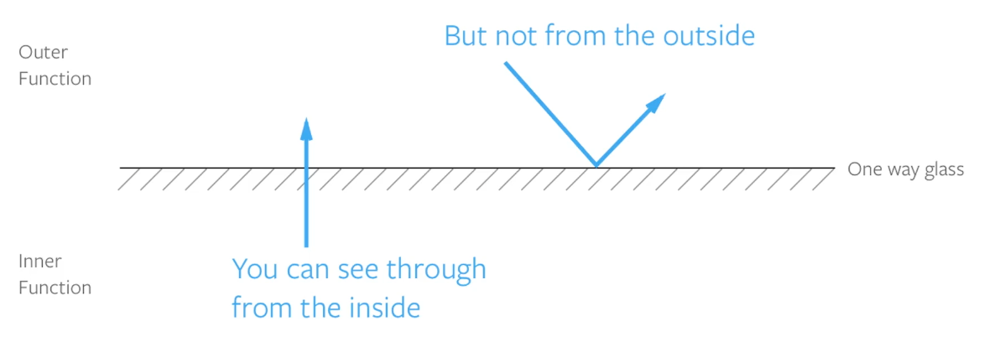

Tricky Parts Intro
First we're going to talk about the concept of Scope, a fundamental topic for any programming language. Then we're going to mention the concepts of hoisting and closures.
f you sticked to the good programming habits, you would never even encounter the use of hoisting.
I've still decided to include the so called "tricky concepts" because questions regarding closures and hoisting are often asked in interview questions. I've got you covered! ;)
What is scope and why do we need it?
What is Scope? Why do we need it? And how can it help us write less error-prone code?Scope simply allows us to know where we have access to our variables. It shows us the accessability of variables, functions, and objects in some particular part of the code.
Why would we want to limit the visibility of variables and not have everything availabile everywhere in our code?Firstly, it provides us with some level of security to our code.
Secondly, it helps to improve efficiency, track bugs and reduce them. It also solves the problem of naming variables.
We have three types of scopes:
- Global Scope
- Local Scope / Function Scope
- Block Scope (only with let and const)
Variables defined inside a function are in local scope while variables defined outside of a function are in the global scope. Each function when invoked creates a new scope.
There are rules about how scope works, but usually you can search for the closest { and } braces around where you define the variable. That “block” of code is its scope.
All of this might be confusing, until you see some examples. You're going to immediately understand what a scope is. Let's explore it in the code.
Global Scope
When you start writing in a JavaScript document, you're already in the Global scope.
const name = 'Milos';
Variables written inside the Global scope can be accessed by and altered in any other scope.
const logName = () => {
console.log(name);
}
logName();
Advantages of using Global variables
- You can access the global variable from all the functions or modules in a program
- It is ideally used for storing "constants" as it helps you keep the consistency.
- A Global variable is useful when multiple functions are accessing the same data.
- Too many variables declared as global, then they remain in the memory till program execution is completed. This can cause of Out of Memory issue.
- Data can be modified by any function. Any statement written in the program can change the value of the global variable. This may give unpredictable results in multi-tasking environments.
- If global variables are discontinued due to code refactoring, you will need to change all the modules where they are called.
Local Scope
Variables defined inside a function are in the local scope.
// Global Scope
const someFunction = () => {
// Local Scope #1
const anotherFunction = () => {
// Local Scope #2
}
}
Advantages of using Local Variables
- The use of local variables offer a guarantee that the values of variables will remain intact while the task is running
- You can give local variables the same name in different functions because they are only recognized by the function they are declared in.
- Local variables are deleted as soon as any function is over and release the memory space which it occupies.
- They have a very limited scope.
Block Scope
Block statements like if or for and while loops, unlike functions, don't create a new scope.
Variables defined inside of a block statement will remain in the scope they were already in.
if (true) {
// this 'if' conditional block doesn't create a new scope
var name = 'Adrian'; // name is still in the global scope
}
console.log(name); // logs 'Adrian'
That is only true with the var. Variables defined with const or let have something called Block scope. That means that they will be available only inside of the block of code you create them in.
if (true) {
// this 'if' conditional block doesn't create a scope
// name is in the global scope because of the 'var' keyword
var name = 'Adrian';
// likes is in the local scope because of the 'let' keyword
let likes = 'Coding';
// skills is in the local scope because of the 'const' keyword
const skills = 'JavaScript and PHP';
}
console.log(name); // logs 'Adrian'
console.log(likes); // Uncaught ReferenceError: likes is not defined
console.log(skills); // Uncaught ReferenceError: skills is not defined
If a variable or other expression is not "in the current scope," then it is unavailable for use.
What is more useful?The local and global variables are equally important while writing a program in any language. However, a large number of the global variable may occupy a huge memory. An undesirable change to global variables is become tough to identify. Therefore, it is advisable to avoid declaring unwanted global variables. Always declare variables in the scope that you want to use them in.
KEY DIFFERENCE- Local variable is declared inside a function whereas Global variable is declared outside the function.
- Local variables are created when the function has started execution and is lost when the function terminates, on the other hand, Global variable is created as execution starts and is lost when the program ends.
- Local variable doesn’t provide data sharing whereas Global variable provides data sharing.
- Local variables are stored on the stack whereas the Global variable are stored on a fixed location decided by the compiler.
- Parameters passing is required for local variables whereas it is not necessary for a global variable